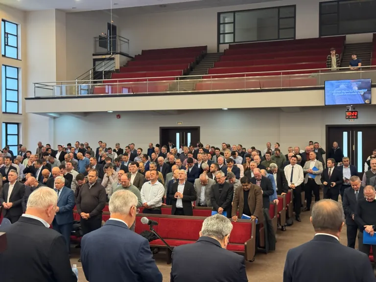

6 decembrie 2025
Conferință pastorală
Discernământ. Discipline. Dedicare. — O conferință care ne reașază chemarea.
COMUNITATEA REGIONALĂ PENTICOSTALĂ ARAD
Susținem bisericile penticostale din județele Arad, Timiș, Hunedoara și Caraș-Severin în lucrarea de slujire, închinare și misiune.
Despre noi
Comunitatea Regională Penticostală Arad aparține Cultului Creștin Penticostal. Coordonăm în mod transparent activitatea bisericilor penticostale din județele Arad, Timiș, Hunedoara și Caraș-Severin, cultivând unitatea frățească și responsabilitatea față de Scriptură.
Comitet
Pastori și slujitori care coordonează activitatea comunității regionale.
Președinte
Vicepreședinte

Secretar
Pastor
Pastor
Pastor
Pastor

Pastor
Pastor
Pastor
Pastor
Documentele fundamentale ale credinței și organizării în cadrul Comunității Regionale.
Regiunile noastre
Oferim sprijin, coordonare și resurse bisericilor penticostale din cele patru județe ale regiunii noastre.
Evenimente
O privire de ansamblu asupra întâlnirilor și conferințelor importante din comunitatea noastră.
6 decembrie 2025
Discernământ. Discipline. Dedicare. — O conferință care ne reașază chemarea.
3 decembrie 2025
O seară de laudă, închinare și mesaj biblic pentru tinerii din regiune.

2 decembrie 2025
Educația teologică – investiție strategică pentru generațiile care vin.
SEMINARII
Sesiuni de instruire, studiu biblic și formare spirituală dedicate slujitorilor și comunității.
Învățături fundamentale pentru lideri și lucrători ai bisericii.
Dialoguri deschise, instruire și orientare spirituală pentru tineri.
Consolidarea relațiilor, comunicării și vieții de familie creștine.
LOCAȚIE
Ne puteți găsi la sediul Comunității Regionale Penticostale Arad, pe Strada Miron Costin nr. 2A, cod poștal 310146.
Contact
Pentru întrebări sau colaborări, ne puteți scrie folosind formularul de contact.
Biroul Comunității Regionale
Ne puteți scrie pentru întrebări legate de evenimente, colaborări sau informații administrative. Vom direcționa mesajul către persoanele potrivite.
Comunicarea oficială se realizează în colaborare cu pastorii și liderii zonali din cadrul comunității.
Comunicarea oficială se realizează în colaborare cu pastorii și liderii zonali din cadrul comunității.